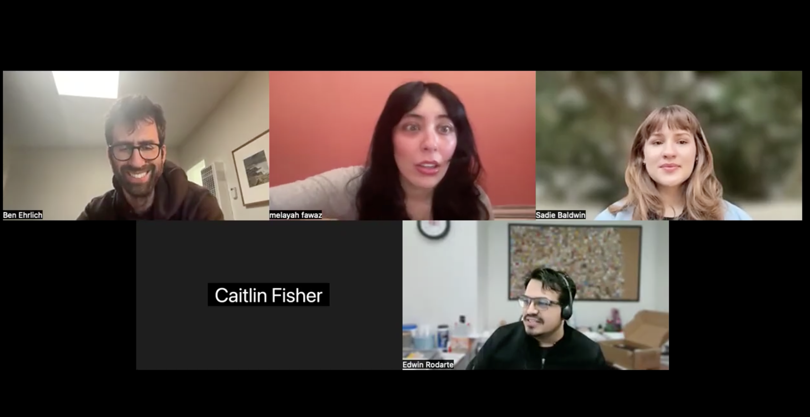

Section
Interview
Here is our interview with Edwin Rodarte, Emerging Technologies Librarian at the Los Angeles Public Library.
Interview Video
Click the thumbnail to watch on YouTube.

Prefer to open in a new tab? Watch on YouTube
Pre-Interview Questions + Brief Answers
Below you’ll find a list of some questions we shared with Edwin before our interview, along with his brief answers. While many of these were touched upon within the interview itself, this resource gives some more in depth discussion and insight into these topics. Simultaneously, it acts as a pseudo transcript.
Here, you will also find links to the technology services offered at LAPL that Edwin mentions in the interview!
Selected Q&A
Can you describe your current role as Senior Librarian of Emerging Technologies at LAPL?
- Manager of a multi-unit department (emerging tech, data team, and most recently digitization)
- In charge of current technology initiatives (Tech2go, Tech-Try-Out, Laptop lending kiosks, Cybernauts, Short Story dispenser)
- Looking for opportunities to implement new tech where possible—most easily as part of the Tech2go brand, but also via other opportunities like grants (XR content) and by attending conferences like CES
- Work for the past few years has been mainly focused on digital inclusion
How did you get into this specialization within librarianship?
- Like many others in librarianship, it is often something that people stumble upon; this role was new to the library system altogether and he was the one to get it
- No specialized training—simply an interest in the topics
- The only specialized training he had was HTML as well as basic data analysis concepts, which helped with part of the role
What does “emerging technologies” mean in a public library context?
- For most, they will think of shiny new gadgets, but for the library, it oftentimes means tried and tested tech
- Three categories of emerging tech for libraries: Maker space tech (gadgets), digital literacy, and behind-the-scenes infrastructure tech (after-hours lockers, data analytics, lending technology)
What kind of technologies and systems are you responsible for? (software, hardware, platforms)
- Digital Inclusion work
- Tech2go, Cybernauts, library of things, tech kiosks
- A.I. taskforce; AI Summit; AI internal policy
- Short Story Dispensers
- Data analysis
- Camera for people counting and traffic, program attendance, etc.
How do these systems support library services for the public?
- Technology is always about access: what technology is needed, and how can the library assist?
- The ultimate goal is to assist patrons or library staff
What is involved in implementing new technologies in a large system like LAPL?
- Budget, procurement of devices, processing, policies, instructions for staff/public, FAQs, training, packaging, branding, piloting
- Take project management courses 🙂
How do you evaluate whether a technology is worth adopting?
- Is it tried and tested or too new to the market? What version are they in?
- Learned this the hard way after going all in on VR/AR and then having the technology not be supported by the company
- Libraries take time to plan/launch new tech; ensure a few years of useful life before it becomes obsolete
What does technology mean to you regarding accessibility?
- Tech is a great tool for accessibility and can help close gaps
- Library can provide access to unaffordable technology
- VRI and over-the-phone interpretation services for staff so patrons can receive help regardless of language
- Tested translators; revisiting now as the technology improves
What role does data (metrics, usage stats, analytics) play into your work?
- In charge of the Data Team at LAPL; added staff including a Data Analyst
- Data evaluates program success and identifies gaps/needs (Tech2go, Cybernauts, AI education)
What advice would you give to an MLIS student that is interested in your career path?
- Take as many technology courses as you can; learn coding if available
- Roles are few—make a case for creating them; coordinated efforts matter
Are there specific technical skills necessary, or are there skills more important?
- Project management, grant writing, data analysis (Excel/Sheets)
- Power BI, Tableau, Google Looker (dashboarding)
Who do you collaborate with most often?
- IT for device management/purchasing; staff once product/program is finalized
How do you balance technical decisions with community needs?
- Community always comes first
- Canceled VR programs due to low interest/attendance; hard to showcase in group settings
Do institutional constraints shape your work? (bureaucracy, budget, policies)
- Budget always; hotspots are expensive
- Red tape for new expensive tech; bids/sole source contracts
How much of your position is maintenance versus innovation?
- Recently more maintenance/digital inclusion (e.g., street WiFi marketing plan)
- Innovation expected to ramp up with AI
Are you exploring AI tools at LAPL and is it currently being used?
- City uses Google Gemini; staff training for productivity/exploration; LA City user data not fed into the LLM
- Internal use policy in progress; AI summit planning for May
Do you see opportunities for AI in library services? Do these come with concerns?
- Yes—libraries must be informed and prepared to answer public questions; key role in AI education
Do you find barriers within the community when accessing technology in libraries?
- Awareness and education barriers; tools require training (laser cutters, 3D printers, etc.)
Where do you see your field in the next 5–10 years?
- Libraries should be heavily involved in AI education
- E-lending is the future; libraries must address publisher pricing and access constraints
LAPL Programs and Services Mentioned
Add links here to the technology services offered at LAPL that Edwin mentions in the interview.